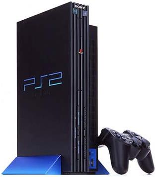

Dodano 22.06.2004r.

HISTORIA PLAYSTATION 2
DANE TECHNICZNE PLAYSTATION 2
GRY NA PLAYSTATION 2
GALERIA
PODSUMOWANIE
NOWE NEWSY

Dodano 22.06.2004r.
Zapraszamy
Witamy w dziale Sony Playstation 2. Znajdziecie tu opis historii konsoli, dane techniczne,gry jakie uj¿a³a konsola PS2, galeriê, która siê powoli rozroœnie, oraz podsumowanie nowego dziecka Sony.

Dodano 22.06.2004r.
Finish sprzeda¿y.
Sony oficjalnie poinformowa³o, ¿e sprzeda¿ konsoli Playstation osi¹gnê³a poziom 100mln sztuk tych konsol. Wliczone w tê liczbê s¹ egzemplarze konsol PS One. Przypomnijmy, ¿e konsola zadebiutowa³a w Japonii w 1994r. i osi±gnê³a niesamowity sukces. Ten sprzêt wygra³ walkê z najwiêkszym konkurentem-Segi. W wyniku tego Playstation doprowadzi³o do zaprzestania produkcji Segi Saturn. Równie¿ wtedy Nintendo i jego nowa konsola-Nintendo 64 równie¿ zosta³a spisana na starty lecz produkcjê nadal kontynuowano. Obecnie PS One przechodzi do historii choæ wiele osób j¹ kupuje dlatego, ¿e nadal potrafi dostarczyæ œwietnej rozrywki za niewielkie pieni¹dze.

Dodano 22.06.2004r.
Nowe GTA.
Jak poinformowa³a firma Rockstar w paŸdzierniku 2004r. zadebiutuje nowa seria gier Grand Theft Auto. Nowa gra z nowym tytu³em:GTA San Andreas bêdzie siê znacznie ró¿niæ od swoich poprzedników. Bêdziemy kierowaæ czarnoskórym bohaterem. W grze pojawi± siê nowe nowinki: naszego bohatera musi karmiæ lub æwiczyæ by nie straci³ energii!!!, pojawi siê nowy typ lokomocji:rower, bêdziemy mogli p³ywaæ!!! Seria GTA od czêœci 3 cieszy siê ogromnym sukcesem. Równie¿ ta wersja bêdzie na pewno hitem. Gra najpierw pojawi siê na Playstation 2 byæ mo¿e na Xboxa i na koñcu na PC.

Dodano 22.06.2004r.
Koniec Gran Turismo na PS2.
Twórca serii Gran Turismo:3,4 oœwiadczy³, ¿e czêœæ serii:Gran Turismo 4 jest ostatni¹ na konsolê Sony Playstation 2. Dalsze czêœci serii bêd¹ wydawane tak¿e na konsolê Sony, ale ju¿ na Playstation 3. Wed³ug nas nie jest to dobra wiadomoœæ. Jak wiemy fani serii za oko³o rok bêd¹ musieli wymieniæ sprzêt z PS2 na PS3! A przecie¿ nie wszystkich staæ na wymienianie konsol co trzy lata. Kto kupuje konsolê ma nadziejê, ¿e gry te najlepsze bêd¹ na ten sprzêt powstawaæ.